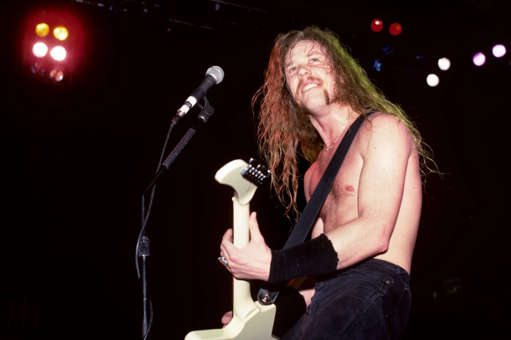
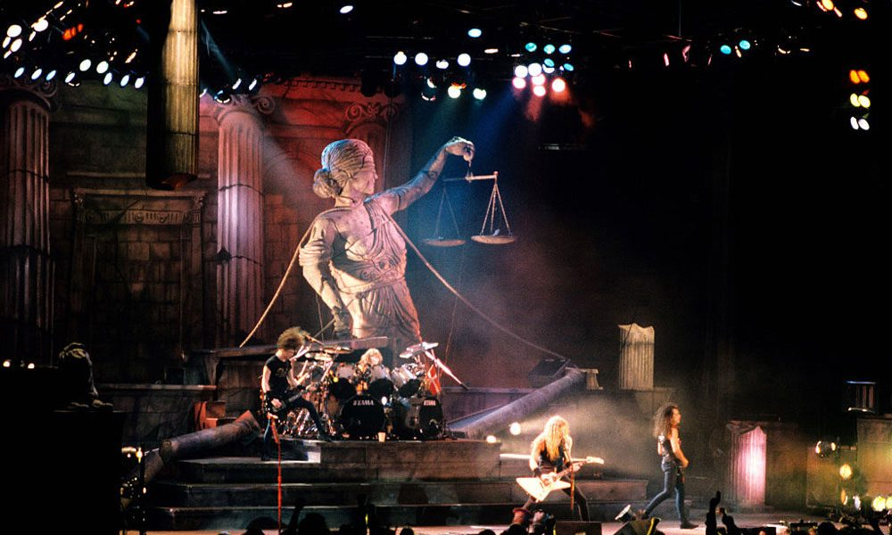
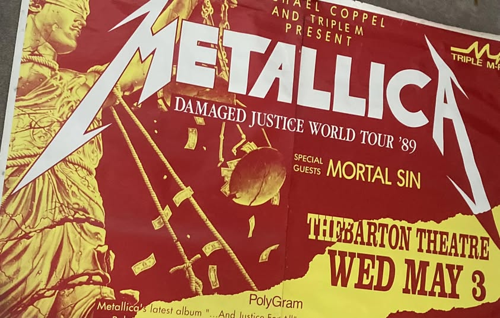

A Damaged Justice Tour a Metallica 1988 és 1989 között zajló világkörüli turnéja volt, amely az …And Justice for All albumot népszerűsítette. Ez volt az első nagy turné, amelyen Jason Newsted teljes jogú tagként vett részt Cliff Burton halála után.
A turné különösen fontos volt a zenekar karrierjében, mert ekkor léptek át a klubokból és kisebb helyszínekből a nagy arénák világába. A Metallica energikus fellépései és technikás dalai hatalmas hatással voltak a közönségre.
A koncertek látványvilága a korszakhoz képest modernnek számított, és a zenekar egyre nagyobb hangsúlyt fektetett a színpadi jelenlétre. A turné során több legendás koncert is született, amelyek hozzájárultak a Metallica világhírnevéhez.
Setlist és dalok
A Damaged Justice turné setlistje főként az …And Justice for All album dalaira épült, de korábbi klasszikusok is szerepeltek benne.
| Gyakran játszott dalok |
|---|
| Blackened |
| …And Justice for All |
| One |
| Harvester of Sorrow |
| Eye of the Beholder |
| Klasszikus dalok |
| Master of Puppets |
| Seek & Destroy |
| For Whom the Bell Tolls |
| Creeping Death |
A turné során a Metallica gyors, technikás és rendkívül intenzív koncerteket adott, amelyek megalapozták a zenekar hírnevét mint az egyik legjobb élő metal banda.



